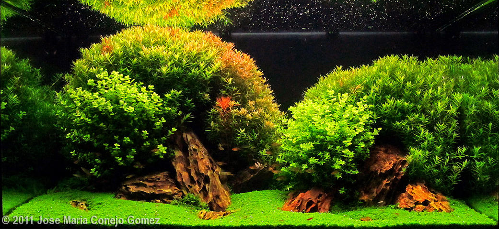

ความรู้เกี่ยวกับตู้ไม้น้ำ

เริ่มแรก พืช หรือ ต้นไม้ คืออะไร?
พืชเป็นสิ่งมีชีวิตประเภทหนึ่ง
พืช "เป็นสิ่งมีชีวิต" ที่มีอยู่ทั่วโลกราว 350,000 ชนิด พบได้ทั้งบนบกและในน้ำ
ลักษณะพิเศษที่ต่างไปจากสิ่งมีชีวิตชนิดอื่นของพืชก็คือ มันสามารถ สังเคราะห์แสงได้

การสังเคราะห์แสง คือการที่พืชรับพลังงานจากแสงอาทิตย์ มาใช้ในการผลิตอาหาร
โดยการใช้แสง น้ำ และแร่ธาตุต่างๆ (ปุ๋ย) ที่พืชดูดซึมมาจากพื้นดินและอากาศ ผสมรวมกับ คาร์บอนไดออกไซด์ หรือ CO2
เพื่อให้ได้มาซึ่งพลังงาน ในรูปของน้ำตาลกลูโคส และนำมาใช้ในการเจริญเติบโต สร้างลำต้น กิ่ง ใบ และราก
ทีนี้เราก็พอจะรู้เบสิคของพืชแล้วนะครับ ว่ามันต้องการอะไรบ้าง แต่ว่า เราจะปลูกไม้น้ำใช่ไหมครับ ไม่ใช่ต้นตะเคียน ไม่ใช่ผักคะน้า
ถ้าอย่างนั้น ไม้น้ำต้องการอะไรบ้าง? เรามาดูปัจจัยที่ไม้น้ำต้องการกันก่อน
วัสดุปลูกที่เหมาะสม
ปุ๋ยและแร่ธาตุที่ต้นไม้ต้องการ ในปริมาณที่เหมาะสม
ปริมาณแสงสว่างที่พอเพียง ในระยะเวลาราว 8-12 ชั่วโมงต่อวัน เพื่อใช้ในกระบวนการสังเคราะห์แสง
สภาพน้ำที่เหมาะสมกับการเจริญเติบโตของไม้น้ำ
ปริมาณ Co2 และ O2 ที่เพียงพอ
เห็นมั้ยครับ คล้ายไม้บกมากๆ แค่มันกระแดะไปอยู่ในน้ำแค่นั้นเอง ดังนั้นการปลูกไม้น้ำก็จะไม่ต่างจากไม้บกมากนัก
ก็เตรียมที่ ลงดิน เอาต้นมันมา ฝังลงไป รดน้ำ พรวนดิน ใส่ปุ๋ย นั่งรอดูมันโต โตมากไปก็ตัดแต่ง เย่!! เสร็จแล้ว
การเลี้ยงไม้น้ำมันก็เหมือนการจัดสวนในตู้ปลาน่ะแหละครับ แต่ไม้น้ำไม่ต้องรดน้ำครับ (แหงล่ะ)
พรวนดินก็ไม่ต้องครับ
เพราะเราจะดูมันสวยๆ ไปพรวนดินขึ้นมาเดี๋ยวน้ำขุ่น ไม่ต้องมองกันล่ะ
ทีนี้เรามาดูรายละเอียดกัน ว่าไอ้ปัจจัยที่ไม้น้ำต้องการเนี่ย เราจะจัดให้มันได้ยังไง แบบไหนถึงจะถูกใจมัน
---
วัสดุปลูกสำหรับตู้ไม้น้ำ มีอยู่สองชนิดหลักๆคือดินและกรวด
1.ดินสำหรับตู้ไม้น้ำ
วัสดุปลูกที่เหมาะกับพืชก็ต้องเป็นดินแหงอยู่แล้ว แต่เราไม่สามารถเอาดินขุยไผ่ หรือดินใบก้ามปูในสวนมามี๊ใส่ลงไปในตู้ปลาได้
เพราะขืนทำแบบนั้น น้ำก็ขุ่นเป็นโคลนกันพอดี
ดินที่เหมาะสมจึงควรจะเป็นดินที่ทำมาสำหรับตู้ไม้น้ำเท่านั้น ซึ่งดินสำหรับตู้ไม้น้ำนี้จะเป็นดินที่ผลิตขึ้นมาด้วยการนำดินผงละเอียดมาเขย่า,ปั้น
ด้วยเครื่องจักร ให้รวมตัวกันเป็นเม็ดดินเล็กๆ เหมือนกรวด และนำไปผ่านกรรมวิธีต่างๆ ทำให้ดินนั้นไม่ละลายน้ำเป็นโคลน
แตกตัวยาก
---
ราคาดินปลูกไม้น้ำอาจจะสูงซักหน่อย ค่าดินสำหรับตู้ 24" จะต้องใช้เงินราวๆ 1000 บาท
แต่มันก็ทำให้การเลี้ยงไม้น้ำง่ายขึ้นเยอะ
เพราะมีแร่ธาตุอยู่ในตัว และมีคุณสมบัติเหมาะกับการเจริญเติบโตของไม้น้ำ
วิธีการใช้ที่นิยมกันคือรองพื้นตู้ด้วยหินพัมมิส
หนาประมาณ 0.5-1 นิ้ว แล้วทับหน้าด้วยดินจนได้ความหนาที่ต้องการ
การรองด้วยหินพัมมิสก็เพื่อลดการอัดแน่นที่ชั้นล่างของดิน
ช่วยให้น้ำไหลเวียนในชั้นดินได้ดีขึ้น และเป็นที่อยู่ของจุลินทรีย์ และทำให้ประหยัดดินไปได้จำนวนหนึ่งด้วย
-ภาพหินพัมมิส-
-ภาพการรองพื้นด้วยหินพัมมิส- ข้อดีของดิน
มีแร่ธาตุและปุ๋ยสำหรับไม้น้ำ ทำให้การเลี้ยงไม้น้ำช่วงเริ่มต้นง่ายขึ้น ไม่ต้องกังวลกับเรื่องปุ๋ยรองพื้นและปุ๋ยฝังไประยะหนึ่ง
เนื้อดินมีความอ่อนนุ่ม เหมาะสำหรับการไชรากของพืช ไม่ทำให้รากพืชเสียหาย
ทำให้ตู้ดูเป็นธรรมชาติ สีเข้มๆของดินทำให้ตู้ดูดิบเป็นธรรมชาติ
ตัดสีต้นไม้ให้ดูเข้มขึ้น
ปรับ pH ได้ ในดินมีกรดฮิวมิค ที่ช่วยปรับสภาพน้ำให้เป็นกรดอ่อนๆ เหมาะสมกับการเจริญเติบโตของพืช
ข้อเสียของดิน
อายุการใช้งานจำกัด ส่วนมากมีอายุประมาณ 1-2 ปี ก็จะเริ่มป่น เละ หมดปุ๋ย ต้องซื้อใหม่เรื่อยๆ
อาจทำให้น้ำเปลี่ยนสี
กรดฮิวมิคและสารอินทรีย์ในดิน อาจทำให้น้ำเปลี่ยนเป็นสีเหลืองได้ โดยเฉพาะช่วงแรกๆที่ยังมีฮิวมัสอยู่เยอะ
ราคาสูง
ถุงขนาด 8-9 ลิตร จะราคาราวๆ 800-1200 บาท
2. กรวด,ทราย
ถ้าไม่ใช้ดิน ก็สามารถใช้กรวดแม่น้ำได้ ราคากิโลละ 10-20
บาท ซื้อได้ตามร้านขายอุปกรณ์เลี้ยงปลาทั่วไป
กรวดที่แนะนำก็คือกรวดแม่น้ำโขง กับ กรวดแก้วครับ เพราะรูปร่างกลมมน
สีสันเป็นธรรมชาติ
---
ถ้าหาไม่ได้ก็สามารถใช้กรวดอื่นๆได้ ที่ไม่ได้ย้อมสีแล้วก็มนๆ ไม่มีคมมากนัก ขนาดประมาณ 2-3 มม.
วิธีการใช้ก็ง่ายๆครับ เราก็เอากรวดเนี่ย ใส่รองพื้นไว้ในตู้ปลา ให้หนาสัก 1 นิ้วขึ้นไป แค่นี้ก็ใช้ได้แล้วครับ
ข้อดีของกรวด อายุการใช้งานเป็นอนันต์ ไม่ป่นเละเมื่อเวลาผ่านไปหลายๆปีเหมือนดิน สามารถล้างนำกลับมาใช้ใหม่ได้เรื่อยๆ
มีน้ำหนักที่จะยึดต้นไม้ที่เราปักไว้ไม่ให้มันหลุดได้ดีกว่าดิน ทำให้ง่ายต่อการปักสำหรับมือใหม่ที่ยังไม่เชี่ยวชาญในการปักต้นไม้เล็กๆ
ราคาถูก กิโลละ 10-20 บาท
ข้อเสียของกรวด ไม่มีแร่ธาตุหรือปุ๋ยให้ต้นไม้ น้ำหนักมาก (ก็หินนี่นะ) ขนกลับบ้านมาใส่ตู้ลำบาก
สกปรก กรวดส่วนมากไม่ได้ล้างมาก่อน และมักจะมีฝุ่นผงปะปนมามาก ต้องนำมาล้างก่อนหลายๆน้ำ สิ้นเปลืองน้ำและเวลา (เมื่อยด้วย)
อ่านเรื่องวัสดุปลูกเพิ่มได้ที่นี่ครับ
---
เหมือนคนต้องกินข้าวครับ ถ้าไม่มีการให้ปุ๋ย ต้นไม้ก็ไม่โต ปุ๋ยสำหรับตู้ไม้น้ำจะมีอยู่
3 ชนิด 1. ปุ๋ยรองพื้น ใช้สำหรับรองพื้นก่อนเทวัสดุปลูก นิยมใช้กับตู้ที่รองพื้นด้วยกรวด,ทราย ลักษณะเป็นผงหรือเม็ดเล็กๆ
2. ปุ๋ยฝัง เป็นปุ๋ยเม็ดหน้าตาคล้ายยาเม็ด มีทั้งที่เป็นแคบซูล แบบอัดเม็ด อัดแท่ง และแบบที่หน้าตาเหมือนยาลูกกลอน ใช้ฝังเพื่อให้ปุ๋ยทางราก
ใช้เป็นระยะๆ 1-3 เดือนครั้ง 3. ปุ๋ยน้ำ สำหรับใส่ในน้ำ เพื่อให้ปุ๋ยในน้ำ ใช้ทุกวันหรืออาทิตย์ละครั้ง ถ้ารองพื้นตู้ด้วยดิน
ก็ไม่จำเป็นต้องใช้ปุ๋ยรองพื้น แต่จะใช้ด้วยก็ได้ และไม่จำเป็นต้องให้ปุ๋ยน้ำและปุ๋ยฝังไปได้ระยะนึง เพราะในดินมีปุ๋ยผสมมาอยู่แล้ว
ส่วนมากจะเริ่มให้ปุ๋ยฝังกันเมื่อผ่านไป 1-2 เดือน ถ้าเรารองพื้นตู้ด้วยกรวด ก็ต้องให้ปุ๋ยตังแต่แรกเลย เพราะในกรวดไม่มีปุ๋ยไม่มีแร่ธาตุอะไร
ต้นไม้ก็ไม่รู้จะเอาปุ๋ยจากไหนไปใช้ มีทั้งแบบน้ำ แบบเม็ดฝังดิน แบบรองพื้นก่อนปลูก ที่ต้องใช้ก่อนก็คือแบบรองพื้นครับ
เพราะต้องใส่ลงไปพร้อมๆกับกรวด
---
ตัวอย่างปุ๋ยรองพื้น ใช้โรยที่พื้นตู้ก่อนลงกรวด หรือคลุกกับกรวดครึ่งหนึ่ง แล้วทับหน้าด้วยกรวดเปล่าๆอีกครึ่งที่เหลือ
หรือจะไม่ใช้ปุ๋ยรองพื้น แล้วใช้ปุ๋ยฝังแทนก็ได้ แต่จะราคาแพงกว่า และลักษณะการปล่อยแร่ธาตุก็ไม่เหมาะเท่าแบบรองพื้น
หลังจากที่ลงกรวดลงดิน จัดตู้ปักต้นไม้เรียบร้อยแล้ว ผ่านไปสัก 3-7 วัน ก็สามารถเริ่มใส่ปุ๋ยน้ำได้ 7-30 วัน ก็สามารถเริ่มฝังปุ๋ยได้
อันนี้เป็นเวลาโดยประมาณนะครับ บอกไว้เพื่อเป็นแนวทาง แต่ละตู้อาจต้องปรับเวลาให้แตกต่างกันไปตามปัจจัยอื่นๆอีก ปุ๋ยฝังก็จะมีหลายรูปแบบ
ทั้งแบบแคบซูล แลลอัดเม็ด และแบบอื่นๆอีก แต่ส่วนมากก็จะเป็นสองแบบแรก
---
ต่อมาก็แสงครับ ต้นไม้น้ำต้องการแสงสว่างระดับหนึ่งเพื่อใช้ในการสังเคาระห์แสง
เปลี่ยนแร่ธาตุ ปุ๋ย และสารอาหารต่างๆให้เป็นพลังงานในการเจริญเติบโต แต่ละชนิดต้องการไม่เท่ากัน มากบ้างน้อยบ้าง แล้วจะรู้ได้ไงว่า
ต้นไม้ชนิดไหนต้องการปริมาณแสงแค่ไหน ง่ายที่สุดคือเราก็ค้นหาจากอินเตอร์เน็ตเนี่ยแหละครับ ใน Aquapedia ก็มีข้อมูลของไม้ชนิดที่ขายๆกันเกือบครบ
หรือค้นหาจาก Google เอาก็มีครับ โพสถามจากเพื่อนๆในบอร์ดหรือถามจากคนขายก็ได้ ก่อนซื้อควรจะหาข้อมูลให้ดีก่อนครับ ว่าไม้ที่เราจะเลี้ยงมีความต้องการปัจจัยต่างๆยังไงบ้าง
ไม่อย่างนั้นเอามาแล้วเลี้ยงไม่รอดก็จะเสียเงิน เสียของเปล่าๆ จะดูยังไง วัดยังไงว่า แค่ไหนคือแสงมาก แค่ไหนคือแสงน้อย
ถ้าให้ถูกต้องจริงๆต้องวัดด้วยค่า lux แต่เครื่องวัดมันแพง และยุ่งยากสำหรับคนทั่วไป เราเลยมักจะใช้ดูที่จำนวนวัตต์รวมของหลอดไฟทั้งหมดที่เราใช้
ต่อปริมาณน้ำหรือพื้นที่ผิวน้ำของตู้ครับ อัตราส่วนของไฟกับตู้ที่เหมาะสมคือ 30-70 วัตต์ ต่อพื้นที่ผิวน้ำ 1 ตารางฟุต
30-40 วัตต์ ต่อพื้นที่ผิวน้ำ 1 ตารางฟุต สำหรับไม้น้ำที่ต้องการแสงน้อย เช่น มอสชนิดต่างๆ เฟิร์นและตระกูลอนูเบียส 40-50
วัตต์ สำหรับไม้น้ำที่ต้องการแสงปานกลาง เช่น หญ้าซาจิ (Sagittaria subulata) และไม้ตระกูลอเมซอน (Echinodorus) 50-60
วัตต์ สำหรับไม้น้ำที่ต้องการแสงปานกลาง-มาก เช่นพวก แฮร์กลาสหรือหญ้าหัวไม้ขีด (Eleocharis parvula) กลอสโซ่ (Glossostigma
elatinoides)ไม้ตระกูลคริป (Cryptocoryne) 60-70 วัตต์ หรือมากกว่า 70 วัตต์ขึ้นไป สำหรับไม้น้ำที่ต้องการแสงมาก เช่น
สาหร่ายคาบอมบ้า (Cabomba caroliniana) ตระกูลสาหร่าย และไม้ข้อ เกือบทุกชนิด จอก แหน ตัวอย่างวิธีคิด เช่น เรามีตู้ขนาด
ยาว 24 นิ้ว ลึก 12 นิ้ว สูง 12 นิ้ว เอาแค่ด้านกว้างกับลึกมาคำนวณ หลายคนอาจจะสับสนเรื่องด้านลึกกับสูง ตู้ปลาจะใช้ศัพท์เรียกด้านต่างๆเหมือนพวกเฟอร์นิเจอร์ครับ
ดูตามภาพนี้จะเข้าใจได้ง่าย
---
พื้นที่ผิวน้ำของเราคือ 24x12 นิ้ว หรือ 60x30 ซม. 24 นิ้ว/60ซม. = 2 ฟุต 12 นิ้ว/30
ซม. = 1 ฟุต 2x1 = 2 เท่ากับว่าตู้เรามีพื้นที่ผิวน้ำ 2 ตารางฟุต ฉะนั้นไฟที่เหมาะสมกับตู้เรา ควรจะต้องมีจำนวนวัตต์
60-140 วัตต์ ซึ่งจะเท่ากับโคมที่มีหลอดฟลูออเรสเซนต์ T5HO 24w จำนวน 3-6 หลอด หรือหลอดฟลูออเรสเซนต์ T8 18w 4-7 หลอด
หรือหลอดเมทัล-ฮาไลด์ 150w 1 หลอด (เกินไปนิดหน่อย แต่เกินดีกว่าขาด) การคำนวณแบบนี้ สามารถใช้ได้ทั้งหลอดไฟฟลูออเรสเซนต์แท่งยาวๆ
แบบที่เราใช้ตามบ้านหรือหลอด T8 รวมถึงหลอด T5 หลอดหลอดเมทัล-ฮาไลด์ และหลอด LED นะครับ เพราะกำลังแสงที่ต้นไม้สามารถนำไปใช้ได้เทียบกับจำนวนวัตต์แล้ว
แต่ละชนิดไม่ต่างกันมากครับ ถ้าตู้ของคุณสูงมากกว่า 20 นิ้ว (หักความหนากรวดส่วนที่บางที่สุดแล้ว) ควรจะเลือกใช้หลอด
T5HO (High Output) หรือหลอดเมทัล-ฮาไลด์ และหลอด LED High Power/ติดเลนส์บังคับแสง เพราะหลอดจะมีพลังในการส่องทะลวงผิวน้ำได้ลึกกว่า
และหลีกเลี่ยงหลอด T5 Normal Output กับ LED ธรรมดาครับ
---
สำหรับมือใหม่ ยังไม่ต้องสนใจเรื่องน้ำมากก็ได้ เพราะต้นไม้บ้านๆ
ทั่วๆไป พอทละ 10-40 บาท ส่วนใหญ่แล้วไม่ได้เรื่องมากอะไรกับค่าต่างๆในน้ำมากนัก ช่วงนี้ก็อย่าเพิ่งไปมองพวกที่เลี้ยงยากๆแล้วกัน
ช่วงแรกนี่ห่วงปลาม่องจะดีกว่า คอยดูแลหน่อยในช่วงแรกๆ น้ำที่เปลี่ยนอย่าให้มีคลอรีน ห้ามใช้น้ำบาดาล หรือน้ำกร่อย อุณหภูมิน้ำระหว่าง
20-30 ค่าความเป็นกรด-ด่าง หรือ PH 6.5-7.2 แอมโมเนีย ไนไตร์ท เป็น 0 หรือใกล้เคียง (สามารถวัดได้ด้วยชุดวัดค่าต่างๆเหล่านั้น
หาซื้อได้ตามร้านอุปกรณ์เลี้ยงปลาทั่วไป) ให้ค่ามันใกล้เคียงก็เป็นใช้ได้ เรื่องน้ำ และการดูแลเปลี่ยนถ่ายน้ำศึกษาเพิ่มเติมได้ที่นี่ครับ
---
ภายในตู้เลี้ยงไม้น้ำแบบเต็มระบบ (หมายถึงลงต้นไม้น้ำเต็มๆตู้ เน้นไม้น้ำเป็นหลัก) ถ้าไม่มีการเพิ่ม CO2 ให้ ปริมาณ
CO2 ที่ได้จากการหายใจของปลา และพสัตว์น้ำ จะไม่เพียงพอ เหมือนคนเยอะๆ อัดกันอยู่ในห้องๆนึง แคบๆ มันก็หายใจไม่ออก ต้นไม้ที่ต้องการใช้
CO2 ถ้ามาอัดกันแน่นๆตู้ มันก็หายใจไม่ทัน เราจึงต้องเพิ่ม CO2 ให้ต้นไม้ครับ ถ้าไม่มีให้ ส่วนใหญ่ต้นไม้จะโตช้า ตะไคร่ก็มาง่าย
(เพราะต้นไม้โตไม่ทันตะไคร่) แล้วต้นไม้ก็จะสวยไม่เต็มที่ตามลักษณะของสายพันธุ์ด้วยครับ การวัดปริมาณการใส่ CO2 ลงในตู้
ปกติจะนิยมใช้การนับจำนวนฟองต่อวินาที ด้วยตัวนับฟอง ที่มีน้ำอยู่ภายใน ให้ก๊าซไหลผุดขึ้นมาทีละฟองเพื่อนับปริมาณต่อวินาที
หรือตัวละลายก๊าซบางชนิดอาจจะมีตรงนี้ให้นับได้อยู่แล้ว ก็ไม่ต้องใช้ตัวนับฟองก็ได้ ปกติมาตรฐานถ้าปิดตอนกลางคืน จะเปิด
3-4 ฟองต่อวินาที ถ้าเปิด 24 ชั่วโมง จะเปิด 1-2 ฟองต่อวินาที CO2 ที่ใช้กันอยู่ทุกวันนี้ จะมีอยู่ 2 แบบ 1. CO2 แบบถัง
เป็นถังเหล็กหรืออลูมิเนียม ภายในอัดก๊าซ CO2 เอาไว้เวลาหมดต้องเอาไปเติม หรือเอาไปเปลี่ยนถังใหม่มา เหมือนก๊าซหุงต้มที่เราใช้ในครัวตามบ้าน
(แต่ถังคนละแบบกันนะครับ ใช้ร่วมกันไม่ได้) -ภาพถัง CO2- ถังเหล็กจะราคาถูกกว่า แต่หนักและเป็นสนิมได้ง่าย ถังอลูมิเนียม
ราคาแพงกว่า เบากว่าถังเหล็ก เป็นสนิมได้ยากกว่า ขนาดก็มีหลากหลายครับ จะเรียกกันเป็นกิโล คือความจุถังว่าสามารถบรรจุก๊าซได้น้ำหนักกี่กิโล
ในตลาดที่นิยมใช้กันมีตั้งแต่ 1-12 กิโล ที่นิยมใช้มากที่สุดจะเป็นขนาด 3 กิโล เพราะไม่หนักและไม่ใหญ่มากจนเกินไป แต่ก็มีความจุมากพอและไม่ต้องเติมบ่อยเกินไปนัก
นอกจากตัวถังแล้ว ก็จะต้องมีอุปกรณ์จำเป็นที่ใช้ร่วมกันอีกคือ 1. วาล์วเร็กกูเลเตอร์ (CO2 Regulator) เป็นตัวหลักในการควบคุมปริมาณก๊าซ
ติดที่หัวถัง 2. วาล์วปรับละเอียด (Speed Control, Needle Valve) ใช้ต่อกับเร็กกูเลเตอร์ เพื่อปรับปริมาณก๊าซได้ละเอียดยิ่งขึ้น
3. ตัวกระจายหรือตัวปล่อยก๊าซ CO2 (CO2 Diffuser) ใช้เพื่อละลายก๊าซ CO2 ลงในน้ำ 4. วาล์วกันย้อน (Check Valve) ติดไว้เพื่อกันน้ำไหลย้อนเข้ามาในท่อก๊าซและทำความเสียหายให้กับอุปกรณ์ต่างๆ
และอุปกรณ์เสริมที่อาจจะไม่ใช้ก็ได้ 1. วาล์วโซลินอยด์ (Solenoid Valve) วาล์วไฟฟ้า ใช้คู่กับสวิทช์ตั้งเวลาเพื่อตั้งเวลาปิด-เปิดการปล่อยก๊าซ
CO2 ถ้าไม่ใช้จะต้องติดวาล์วเปิด-ปิดเพิ่มอีกตัวหนึ่ง และคอยเปิด-ปิดก๊าซเอง หรือเปิดก๊าซตลอดเวลา 2. สวิทช์ตั้งเวลาแบบ
24 ชม. ใช้คู่กับโซลินอยด์วาล์ว 3. ตัวนับฟอง (Bubble Counter) ใช้เพื่อตรวจนับปริมาณการปล่อย CO2 ด้วยการนับจำนวนฟองต่อวินาที
4. ตัววัดความเข้มข้นของ CO2 ในน้ำ (Drop Checker) ใช้วัดความเข้มข้นของ CO2 ที่ละลายในน้ำ ด้วยการดูสีของสารละลายที่ใส่ไว้ในตัวอุปกรณ์
CO2 แบบถังจะมีประสิทธิภาพมากกว่าแบบยีสต์ เพราะได้ก๊าซ CO2 เต็มที่ เพียวๆ ใช้กับตู้ใหญ่ขนาดไหนก็ได้ แต่ลงทุนซื้อถังครั้งแรกแพง
ประมาณ 3000 (ราคานี้มีถังขนาด 3 กิโล หัวเรกกูเลเตอร์ วาล์วปรับละเอียด อาจจะมีให้ตัวละลายด้วย) ก๊าซสามารถเปลี่ยนถังหรือฝากเติมได้ที่ร้านที่เราซื้อมา
หรือถ้าแถวบ้านมีร้านขาย/เติมถังออกซิเจน แล้วมาจตุจักรลำบาก อาจจะซื้อถังและเติมที่ร้านแถวบ้านก็ได้ ร้านพวกนี้ส่วนใหญ่จะมีถัง
CO2 ให้ด้วยอยู่แล้ว ถัง 3 kg. เติมครั้งละ 100-150 บาท แล้วแต่ร้าน ตัวอย่างถัง CO2 พร้อมเรกกูเลเตอร์ และโซลินอยด์วาล์ว
อันนี้เป็นถังอลูมิเนียม ราคาแพงกว่าถังเหล็ก แต่เบากว่าและไม่เป็นสนิม
---
2. CO2 แบบยีสต์ เป็นการหมักน้ำตาลกับยีสต์
พอยีสต์กินน้ำตาล ก็จะขี้ออกมาเป็น CO2 เราก็ต่อสายไปลงตู้ ทำครั้งนึงใช้ได้ประมาณ 20-30 วัน ราคาถูกมาก แค่ค่าน้ำตาล
2 ถ้วย ไม่ถึง 10 บาท (น้ำตาลครึ่งโล 10 กว่าบาท) กับยีสต์ อย่างดีๆเลยก็ห่อละ 300 ใช้ไปยันลูกยันหลาน เพราะใช้แค่ครั้งละ
1/2-1ช้อนชา แบบถูกหน่อยขวดเล็กๆไม่ถึง 100 บาท มีข้อเสียคืออาจจะผลิตปริมาณก๊าซได้ไม่พอกับตู้ใหญ่กว่า 36 นิ้ว จริงๆแล้วก็ใช้ได้
แต่ต้องทำหลายชุด ทำให้ค่าใช้จ่ายต่อเดือนแพง (ค่าน้ำตาล) ยกเว้นว่าบ้านคุณเป็นโรงงานน้ำตาล เอิ๊กๆ ยังไงลองไปศึกษาเพิ่มเติมกันก่อนแล้วกัน
นานาสาระ คาร์บอนยีสต์ (จากเริ่มต้น จนเสร็จสมบูรณ์) Coffman 3. CO2 แบบน้ำ เป็นสารทดแทน CO2 ที่อยู่ในรูปแบบของน้ำ ประสิทธิภาพอาจจะสู้สองแบบข้างบนไม่ได้
แต่สะดวก ราคาเริ่มต้นไม่แพง และมีผลพลอยได้คือสารชนิดนี้สามารถกำจัดและควบคุมตะไคร่ได้ด้วย แต่ค่าใช้จ่ายจะสูงกว่าแบบอื่นๆหากใช้ในระยะยาว
จึงเหมาะกับตู้เล็กๆมากกว่าตู้ใหญ่ เพราะสิ้นเปลืองปริมาณการใช้มากกว่า หรือใช้ชั่วคราวระหว่างรอเติมแบบถัง หรือใช้เพื่อกำจัดตะไคร่
---
จบเรื่องปัจจัยของต้นไม้ไปแล้ว คราวนี้เราจะเขยิบออกมาอีกนิด มาดูเรื่องเกี่ยวกับสัตว์น้ำในตู้ไม้น้ำกันครับ สมัยนี้
มีให้เลือกทั้ง กุ้ง หอย ปู ปลาเลยเชียวแหละ เราจะแบ่งประเภทของสัตว์น้ำในตู้ไม้น้ำ ออกตามวัตถุประสงค์ในการใส่ลงไปดังนี้นะครับ
1. ประเภทอยากใส่ เพื่อความสวยงาม และเพื่อสนอง need เราเอง อันนี้รู้กันอยู่แล้ว ตัวที่ชอบนั่นเอง ระวังอย่าใส่สัตว์น้ำที่จะทะเลาะกันเอง
หรือทำร้ายตัวอื่นๆ และไม่ทำลายต้นไม้น้ำก็พอ ประมาณว่า ใส่ไปแล้วไม่ ship หายเป็นใช้ได้ 2. ประเภทจำต้องใส่ เพื่อช่วยกำจัดสิ่งไม่พึงประสงค์
เช่น ตะไคร่ หอย พลานาเรีย ฝ้าผิวน้ำ ดูตามบทความที่ให้มานี่เลยครับ สัตว์น้ำผู้ช่วยควบคุมตะใคร่น้ำ คุณ banx สัตว์น้ำพวกนี้ใช้ออกซิเจนในการหายใจ
แต่ในตู้ไม้น้ำเราไม่สามารถให้ออกซิเจนได้ เพราะจะทำให้ co2 ที่ต้นไม้ต้องการหายไปจากน้ำหมด สัตว์น้ำเหล่านี้จึงมีสภาพเป็นลูกเมียน้อย
ต้องทนใช้ออกซิเจนที่ซึมลงมาทางผิวน้ำอย่างเดียว ดังนั้น เราจึงต้องระวังไม่ใส่สัตว์น้ำในปริมาณมากเกินไป และระวังปริมาณ
co2 ไม่ให้มากเกินไป รวมถึงรักษาความสะอาดของน้ำและพักน้ำลดคลอรีน เพื่อให้สัตว์น้ำเหล่านี้ไม่ตายจากเราไปก่อนเวลาอันควรครับ
รายละเอียดเกี่ยวกับการดูแลสัตว์น้ำในตู้ไม้น้ำ ผมรวบรวมไว้ที่นี่แล้วครับ --- ในตู้ไม้น้ำเราจำเป็นต้องใช้กรองเพื่อช่วยบำบัดน้ำ
ลดปริมาณการเปลี่ยนถ่ายน้ำ และทำให้น้ำใส ตู้ปลาทุกชนิดต้องมีการเปลี่ยนถ่ายน้ำครับ ตู้ไม้น้ำปกติก็อาทิตย์ละครั้ง ถ้ามีใครบอกว่า
ใช้กรองอันนี้อันนั้นแล้วไม่ต้องเปลี่ยนน้ำ มันโม้ครับ ด่ามันเลย ไอ้ขี้โม้!!! ดังนั้น เพื่อคุณภาพน้ำที่ดี ไปอ่านกันซะครับ
รู้จักชื่อและลักษณะกรองชนิดต่างๆกันก่อนครับ ประเภทของระบบกรอง ตามด้วย วัสดุกรองชีวภาพ ที่เราต้องเอามาใส่ในเครื่องกรอง
มันใช้ยังไง มีประโยชน์ยังไง วัสดุกรองชีวภาพ แล้วก็ไปทำความเข้าใจเกี่ยวกับระบบกรองชีวภาพโดยละเอียดครับ ในสุดยอดบทความเเรื่องระบบกรองชีวภาพในตำนาน
"นายกร๋วย บอกเล่าเก้าสิบ" - ความเข้าใจเกี่ยวกับการใช้ระบบกรองแบบ Biological ในตู้ปลาสวยงาม --- ตู้กระจกใสธรรมดา ไม่ต้องมีกั้นกรอง
ขนาดความยาวตั้งแต่ 24-48 นิ้ว จะเหมาะกับมือใหม่ที่สุดครับ เวลาเลือกตู้ให้เลือกขนาดมาตรฐาน จะได้หาอุปกรณ์เสริมได้ง่าย
ไม่ต้องดัดแปลงให้ยุ่งยาก พวกเยอะได้เปรียบครับ ตู้ยาว 24 นิ้วขนาดมาตรฐานจะเป็น ยาว 24 กว้าง 12 สูง 12 นิ้ว ตู้ยาว
36 นิ้วขนาดมาตรฐานจะเป็น ยาว 36 กว้าง 18 สูง 18 นิ้ว ตู้ยาว 48 นิ้วขนาดมาตรฐานจะเป็น ยาว 48 กว้าง 20 สูง 20 นิ้ว
ทั้ง 3 ขนาด ส่วนใหญ่จะใช้กระจกหนา 2 หุน เป็นมาตรฐาน ถ้าบางกว่านี้ไม่ควรใช้ครับ อันตรายเกินไป ถ้ามีตัง เลือกหนาๆไว้ก่อนเลย
3-4 หุนได้ยิ่งดี ยิ่งหนายิ่งปลอดภัยครับ ตู้เล็กกว่า 24 จะดูแลได้ยาก ปริมาณน้ำที่น้อย ทำให้อุณหภูมิ PH แอมโมเนีย ไนไตร์ท
ไนเตรท และค่าต่างๆในน้ำเปลี่ยนแปลงได้รวดเร็วเกินไป บางตู้เผลอแผล่บเดียว วันสองวันอาจจะมีปลาตาย ตู้ล่มกันได้ง่ายๆ
ควรเลือกตู้ใหญ่กว่า 24 ขึ้นไปครับ จะดูแลง่ายกว่ากันพอสมควรเลย ตู้ใหญ่กว่า 48 ก็ได้ ยิ่งใหญ่ยิ่งดีครับ ระบบจะยิ่งมีเสถียรภาพ
มั่นคง แต่การเลี้ยงไม้น้ำในตู้ใหญ่กว่า 48 นิ้วเป็นงานหนักมาก กรวดมากกว่า 4 กระสอบ น้ำ ที่หนักเกือบตัน ปริมาณปุ๋ย
co2 จำนวนไฟที่เราต้องใช้ จะทำให้คนเลี้ยงกลายเป็นคนเหล็กคูโบต้าและกระเป๋าบางได้ครับ ข้อดีก็เยี่ยม ข้อเสียก็เยอะ พิจารณาให้ดีก่อนครับ
ว่าพร้อมไหม? อย่าเลือกตู้ที่สูงเกิน 24 นิ้ว เพราะแสงไฟจะลงไม่ถึงก้นตู้ และเราจะเอื้อมไม่ถึงครับ ขาตู้ เอาขาเหล็กซักอันนึงอ่ะครับ
แบบตรงๆธรรมดาๆ หรือถ้ามีตัง และต้องการความสวยงาม จะเลือกขาตู้ที่เป็นขาเฟอร์นิเจอร์ก็ได้ อย่าลืมรองใต้ตู้ด้วยโฟมก่อนวางตู้
พยายามเลี่ยงขาเหล็กรูปตัว S เพราะความแข็งแรงไม่พอกับตู้ไม้น้ำที่อุปกรณ์เยอะ น้ำหนักมาก แล้วต้องหยิบจับอะไรแถวนั้นบ่อยๆครับ
---
1. ให้นิสิตลิสต์ฟังก์ชั่นของโครงงานที่ได้แจ้งไว้ บันทึกไว้ในไฟล์ project.html 1. ในเขียนในลักษณะนี้ ในฐานะที่ฉันเป็นใคร ฉันต้องการทำอะไร
เพื่อวัตถุประสงค์อะไร เช่น • ในฐานะที่ฉันเป็นนิสิต ฉันต้องการตรวจสอบผลการเรียน เพื่อที่จะได้รู้ผลการเรียนและวางแผนการ เรียนต่อไป
• ในฐานะที่ฉันเป็นอาจารย์ ฉันต้องการตรวจสอบผลการเรียนของนิสิตแต่ละคน เพื่อดูว่านิสิตคนไหน มีปัญหาในการเรียนเพื่อจะได้ให้คำปรึกษาแก่นิสิต
2. ตัวอย่างหน้าจอหลักของระบบ 2 - 3 หน้าจอ (Screen Prototype) แสดงอยู่ในแฟ้มนี้เลย